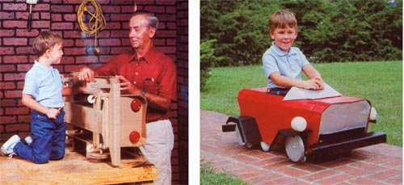
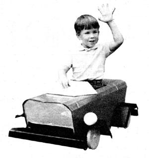
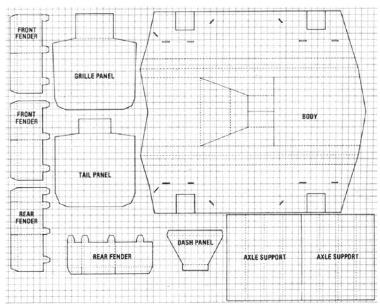
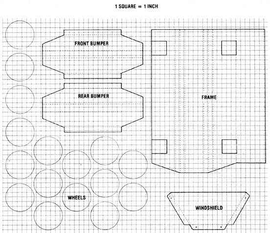

The $1 Cardboard Car
November/December 1983
This cut-and-paste plaything might just be the best Christmas bargain yet.
Paperboard toys were around long before cereal boxes and comic books made them popular. But the old "cut, fold, and tuck flap A into slot B" routine needn't be limited to tabletop trinkets that are likely to disintegrate at a child's enthusiastic touch. In fact, at one time, real rough-and-tumble playthings-such as the roadster you see here-were commonly made from cardboard . . . and were quite able to endure the punishment dished out by an earlier (and maybe even rowdier!) generation.
None of this was lost on research staffer Dennis Burkholder, who's always been fascinated by paper art . . . and by things costing very little (or no) money. So, armed with a corrugated cardboard box (the sort used to ship major appliances), some wood scraps, a small saw, four half-liter plastic bottles, a utility knife, a pencil, a yardstick, a staple gun, and some white glue (Elmer's Glue-All works fine, but Franklin Titebond does seem to dry more rapidly), our trusty craftsman set out to build a next-to-no-cost working toy that anyone could duplicate.
If you could feel the sturdiness of the finished product and heft its nine-pound weight, we think you'd agree that Dennis achieved his goal . . . and, since he's already done the difficult design work, all you have to do is scale up the patterns in the accompanying diagram and transfer them to your own salvaged sheets of cardboard. The rest will be, like the cereal-box toys, mostly a cut, fold, and paste proposition.
OK, so you've laid out your two 48" X 60" corrugated sheets, outlined the car's various parts on them as indicated, and cut the pieces from the paper panels. Your next task is to glue the wheel disks together-in sets of four each-and put them aside to dry. Now, take your main frame section and fold it along the dotted lines, thereby forming a square tube. (Remember to cut out the openings that will later accommodate the square axle supports.)
This central frame is bolstered-in the middle and at both ends-with 3/4" X 5-3/8" X 6-1/2" wooden stiffeners, and further braced with two (3/4" X 3/4" X 7" and 3/4" X 3/4" X 10") wooden stays at the seam. (The job will be easier if you secure the cardboard joint with tape and then staple the stays in place, with the central stiffener between.) The end boards can also be fastened along the top and sides of the frame, but do leave them unstapled until you're ready to actually fit the body in place.
Our little runabout's axle supports are, like the frame, tubular members capped with wood. (Dennis used 2-5/8"-square pieces of 2 X 4, each with a 3/4" hole drilled through its center.) Once the plugs are positioned and stapled, you can slip the supports into the frame openings and glue them in place.
The next part to be installed is the body itself. But before you fold it to shape, take the time to cut some 3/4" X 3/4" wooden
stays that are long enough to surround the axle support openings, then do the same for the top and side edges of the front and rear body panels. With that done, slip the formed body over the completed chassis and glue the stays to the axle housings, then cement and staple the grille and tail panels into position. (Be sure to slide the tabs attached to those two pieces between the bottom of the main frame and the end stiffeners before you glue . . . and go on to finish fastening the lower face of the frame.)
The seat back is made simply by folding that component and gluing its broad tab to the top of the frame. Next, strengthen the sides of the cockpit by bending the lips into the cab and cementing them to the inside of the body. At this point, fold up the windshield . . . and glue, then bolt, it to the top of the body at a point just forward of the cockpit. (Here, 1/4" X 1/2" fasteners with flat washers will do fine.) Now, the dashboard panel can be glued between the forward edge of the cockpit and the top of the frame below.
Each of the four fenders is attached to the body with tabs that are passed through slots and glued from behind. Once those wheel guards are in place, you can cement the overlaps at the fenders' bends to give them additional strength. (On the other hand, the front and rear bumpers are not tabbed: They're simply glued and stapled to the grille and tail panels.)
Dennis' tiny car actually rolls along . . . not on its cardboard wheels, but on furniture swivel casters. To attach these components, drill holes into the lower edges of the wooden caps at the ends of the axle supports (making sure the holes are of a diameter and depth compatible with the casters you're planning to use), and push the rollers into these sockets. The "show" wheels, meanwhile, get center-bored . . . and lag screwed to 2" lengths of 3/4" dowel. Each of these four assemblies can then be glued into the holes you've already provided for them in the axle housing plugs.
Half-liter plastic soft drink bottles provide our convertible with suitable head- and taillights. The main beams are made by cutting the necks off two containers, then slicing the midsections from each. The two remaining parts of each bottle can now be forced together-base into the top-and the resulting pods painted, drilled, and bolted to the tops of the front fenders. At the rear, the bottoms from two similar bottles can be given a coat of red paint before being glued to the back panel.
All that's left now is to give your jalopy a snappy enamel paint job. Although you could have done this before you assembled the pieces, it's a lot neater to do it afterward, and to simply mask the already painted parts before you go on to a different color. If you don't care to use Dennis' scheme as a model, vary it to suit your taste.
Mr. Burkholder advises that it'll take up to six hours to bring the project to completion, considering that the pieces must be cut and fit, and the glue given time to dry between steps. But, for an overall investment of a buck or two (and a couple of evenings), we really don't think you could go wrong!
|
 |
 |
 |
|
 |
 |
|